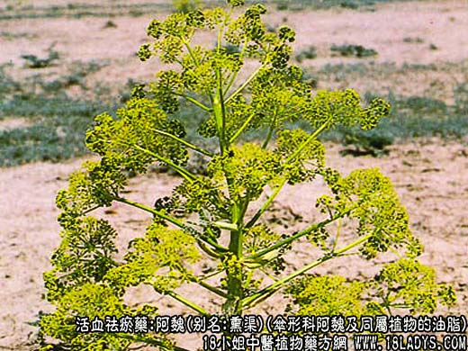
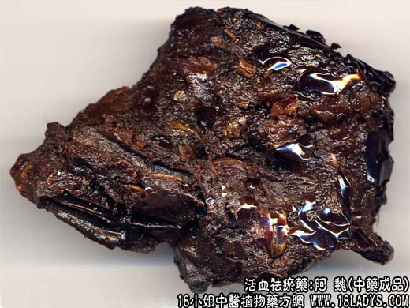

阿魏，别名：熏渠、魏去疾、哈昔泥、五彩魏、臭阿魏，为伞形科草本植物阿魏及同属植物渗出的油脂。苦、辛，温。归脾、胃经。
消积散块：用于腹中痞块，妇女血积瘀痛，食积停滞，疟疾，痢疾等。可单用，或配伍消食行气药同用。
【药物形态】
本品呈不规则的块状和脂膏状。颜色深浅不一，表面蜡黄色至棕黄色。块状者体轻，质地似蜡，断面稍有孔隙；新鲜切面颜色较浅，放置后色渐深。脂膏状者黏稠，灰白色。具强烈而持久的蒜样特异臭气，味辛辣，嚼之有灼烧感。
【功效与作用】1.有刺激性祛痰作用。对人型结核杆菌有抑制作用。2.能延长血凝时间。
【化学成分】含挥发油、树脂、树胶、伞花内酯、阿魏酸。
【用量用法】5——15g，入丸、散剂。
以上为阿魏的功效与作用，了解更多中药的功效与作用请关注中药大全。